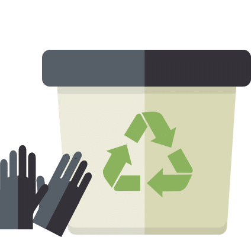

Estas son nuestras mejores prácticas para mantenerte (y casi todo lo demás) limpio y libre de virus.
Hay algo profundamente inquietante sobre salir de la casa, del aburrimiento del trabajo, del auto-aislamiento, al tenso pánico ambiental de las compras durante una pandemia. Lo normal es una moneda de doble cara ahora. En casa las cosas se sienten hiperreales, y fuera se sienten completamente surreales, a dos pasos de las escenas de flashback en una película postapocalíptica. Puede que sientas una tensión entre ayudarte a ti mismo y ayudar a tu comunidad. La vida diaria durante la pandemia del coronavirus de la novela se trata de desorientar contrastes como estos.
Puede parecer más productivo leer nuestra Guía de equipo y suministros para el coronavirus y comenzar a llenar su despensa con productos enlatados y esenciales, pero limpiar y desinfectar las superficies de su casa puede ayudar a disminuir las posibilidades de que usted o un ser querido contraiga el Covid-19 y reducir las posibilidades de que lo propague a otra persona. Mantener su casa (y a usted mismo) desinfectada ayuda a todos.
Los Centros para el Control de Enfermedades recomiendan que todos tomemos medidas para limpiar y desinfectar las superficies de alto contacto en nuestros hogares. A continuación, nos adentramos en la maleza de cuánto tiempo puede durar el virus en las superficies, qué desinfectantes pueden matarlo y las medidas que debe tomar para mantenerse limpio.
Para mantenerse libre de virus Lávate las manos
Ya lo ha escuchado un millón de veces, y lo escuchará un millón más, pero la mejor manera de reducir el riesgo de contraer Covid-19 (o de pasárselo a otra persona) es lavarse las manos después de toser, estornudar, tocarse la cara, usar el baño o estar a punto de salir de un lugar para otro. Por ejemplo, debe lavarse las manos al salir y al volver de la tienda de comestibles.
Si puede encontrar alguno, el desinfectante de manos también hace maravillas. No es un sustituto para lavarse las manos, sin embargo. Cuando puedas, el agua y el jabón caseros pueden ser un poco más fáciles para tus manos. No necesariamente matará todos los patógenos, pero los lavará. La Organización Mundial de la Salud tiene instrucciones detalladas (que todos hemos visto en forma de meme) sobre cómo realizar correctamente el lavado de manos de 20 segundos.
También es importante humedecer abundantemente las manos.
La piel seca y agrietada corre un mayor riesgo de contraer todo tipo de infecciones, así que después de lavarse, aplique un poco de hidratante. ¡Está muy bien! La mayoría de las lociones hidratantes tienen ingredientes similares, empezando por agua y glicerina, así que la marca no importa realmente. (Aquí hay algunas lociones de manos en Amazon.) Si tus manos están extra secas, busca algo que el dermatólogo te recomiende con una etiqueta de "intensivo", como Eucerin Advanced Repair o Neutrogena Hydro Boost.
(Nota: Si compras algo usando los enlaces de nuestras historias, podemos ganar una pequeña comisión de afiliado. Así es como funciona esto).
Quédese en casa
Aunque no estés enfermo, quédate en casa si puedes. Estar entre grandes multitudes o salir a restaurantes supone riesgos innecesarios no sólo para ti mismo sino para la gente que te rodea. Cuanto más esté en público, más posibilidades tiene el nuevo coronavirus de que le den un aventón en las manos, la ropa o la persona. Millones de personas son muy vulnerables a este virus. Ponerse a sí mismo en riesgo también los pone a ellos en riesgo.
"Habrá una porción considerable de personas mayores, o que tienen otras condiciones de salud, y si se enferman de una sola vez, van a abrumar el sistema de atención médica. Así que estamos tratando de disminuir el número de transmisiones", dijo a WIRED el Dr. John Townes, jefe de prevención y control de infecciones de la Universidad de Salud y Ciencias de Oregón.
Reglas importantes para mantenerse a salvo:
- Permanecer en casa tanto como sea posible, evitar grandes reuniones, salir a los bares, restaurantes, etc.
- Manténgase al menos a seis pies de distancia de otras personas en público.
- Una vez más, lávese las manos con frecuencia durante al menos 20 segundos (o utilice un desinfectante de manos).
- Si está tosiendo o estornudando, use una máscara protectora.
Por qué debe evitar las mascarillas (por ahora)
Sirven un propósito importante para las personas que están enfermas o que cuidan a una persona enferma, pero las mascarillas son escasas y las necesitan los trabajadores de la salud y los que están enfermos con el virus. Usar una máscara también puede darle una falsa sensación de seguridad, haciendo que se ponga en mayor riesgo.
"De hecho, es posible que te toques la cara más a menudo porque te estás ajustando la mascarilla. O puede que esté intentando evitar que sus gafas se empañen, entonces el portal de entrada podría ser su ojo", dijo Townes. "Creo que tenemos que quitarle importancia al uso de máscaras en público como estrategia".
Por lo que sabemos, el nuevo coronavirus se transmite por contacto de persona a persona, o por gotas respiratorias. Esas gotitas no se quedan suspendidas en el aire, caen al suelo a unos seis pies de la persona infectada.
Para mantener su hogar libre de virus
Limpiar y desinfectar
Lo primero que querrás saber es que la limpieza y la desinfección son dos cosas muy diferentes. El CDC recomienda que todos hagamos un poco de ambas, incluso si nadie en su casa está enfermo. - La limpieza consiste en eliminar los contaminantes de una superficie.
- Desinfectar es matar los patógenos.
- Haga ambas cosas diariamente si algo o alguien ha entrado o salido de su casa.
La transmisión de persona a persona es un riesgo mucho mayor que la transmisión a través de superficies, pero el CDC recomienda que limpiemos y desinfectemos las superficies de alto contacto en nuestros hogares al menos una vez al día sólo para estar seguros, asumiendo que hemos tenido contacto con el mundo exterior de alguna manera, ya sea una persona que sale y regresa o bienes que entran.
Apunta a las superficies de alto contacto de tu casa
Los investigadores han encontrado que el nuevo coronavirus es capaz de vivir en superficies como el cartón durante 24 horas, pero hasta dos o tres días en plástico y acero inoxidable. Así que limpiar y desinfectar las superficies de alto contacto es un paso que todos deberíamos dar.
Superficies de alto contacto para limpiar y desinfectar diariamente:
- Pomos de puertas
- Las superficies de las mesas
- Sillas de comedor duras (asiento, respaldo y brazos)
- Los mostradores de la cocina
- Mostradores de baño
- Los grifos y las perillas de los grifos
- Inodoros (asiento y manija)
- Interruptores de luz
- Mandos a distancia de la TV
- Los controladores de los juegos
La casa de cada uno es un poco diferente, así que piensa en las superficies con las que más interactúas. Para mí, eso incluye lo anterior, además de las superficies de escritorio y las alfombrillas de ratón (llegaremos a los aparatos en un momento). Ahora que sabes lo que estás limpiando, así es como deberías hacerlo.
Primero limpia, luego desinfecta:
- Primero, limpia las superficies, eliminando cualquier contaminante, polvo o escombros. Puedes hacerlo limpiándolas con agua jabonosa (o un spray de limpieza) y una toalla de mano.
- Luego aplique un desinfectante apropiado para la superficie. La forma más rápida y fácil de hacerlo es con toallitas desinfectantes o con un spray desinfectante.
El más popular
Eso es todo. El simple hecho de agregar esto a su rutina diaria puede ayudar a reducir el riesgo de infección para usted y para cualquier otra persona en su hogar. Si no puede obtener desinfectantes en este momento, sólo haga un trabajo minucioso con el jabón o los agentes de limpieza que tenga.
La EPA tiene una lista completa de desinfectantes que matarán al nuevo coronavirus, pero aquí hay algunos esenciales que hay que tener en cuenta. Puede encontrar la mayoría de estos desinfectantes en línea en Amazon o Walmart si su tienda de comestibles local está agotada. La mayoría de los desinfectantes deben tener una etiqueta que enumere los virus contra los que son eficaces, y eso es lo que usted querrá buscar más que cualquier ingrediente activo en particular.
"Si tiene una indicación para matar la gripe, el virus RSB, el SARS, u otros coronavirus, entonces debería funcionar contra éste también", dijo Townes.
Desinfectantes:
- Toallitas desinfectantes (Clorox, Lysol, o la marca de la tienda servirá)
- Aerosol desinfectante (Purell, Clorox, Lysol, todos hacen aerosoles que funcionan)
- Alcohol isopropílico
- Peróxido de hidrógeno
Si no puede encontrar desinfectantes comprados en la tienda
Los estantes de las tiendas están vacíos en muchos lugares, especialmente en la sección de limpieza, pero aún así tienes muchas opciones. En primer lugar, por favor, use más jabón, agua, y fregar. Eso puede hacer una gran diferencia.
El CDC también tiene una receta recomendada para una solución de limpieza casera con lejía.
Cómo hacer un aerosol desinfectante de lejía casero: - 4 cucharaditas de blanqueador casero
- 1 cuarto de agua
- Vierta ambos en una botella de spray de un cuarto de galón, agite vigorosamente
- Rocíe la superficie para desinfectar, déjela reposar durante 10 minutos, límpiela con un trapo húmedo.
La lejía es excesiva en la mayoría de los casos. Nunca debe mezclar la solución de lejía con ningún otro producto químico de limpieza, y es probable que dañe o decolore las superficies sensibles. Úsalo como último recurso si no puedes conseguir o adquirir ningún otro tipo de desinfectante. Con la lejía, recuerde usar guantes, abrir las ventanas (la ventilación es su amiga) y tener cuidado.
Alternativamente puedes hacer tu propio spray desinfectante sin blanqueador con algunos ingredientes que puedes pedir en línea.
¿Funciona la lavadora de ropa en la ropa?
Sí, en su mayoría. Simplemente lavar la ropa con jabón de lavandería normal y secarla a una temperatura ligeramente más alta de la que podría tener de otra manera es todo lo que tiene que hacer para desinfectar su ropa.
Asegúrese de desinfectar las superficies con las que la ropa sucia entra en contacto, incluyendo el cesto y sus manos, especialmente si tiene una persona enferma en la casa.
Limpie y desinfecte el cesto como lo haría con cualquier otra superficie, y lávese bien las manos después de manipular la ropa sucia de una persona enferma. Los CDC recomiendan utilizar un forro en la cesta.
No te olvides de limpiar tu abrigo y tu mochila. Limpiar el interior con una toallita desinfectante debería ser suficiente, a menos que su chaqueta se pueda lavar en la lavadora.
¿Debería desinfectar la comida y los aperitivos?
No, no sin razón. Según la FDA, no hay evidencia que sugiera que la comida o los envases de comida puedan transmitir el nuevo coronavirus, así que actualmente no hay necesidad de desinfectar la comida o los envases de comida más de lo que normalmente lo harías. Sólo hay que observar la seguridad alimentaria estándar.
¿Debería desinfectar los paquetes y el correo?
Sí, ligeramente. De acuerdo con el USPS, el correo y los paquetes tienen un riesgo relativamente bajo de transmitir el nuevo coronavirus, y los paquetes de China no representan un riesgo especial comparado con los de cualquier otro lugar. Dicho esto, los investigadores han descubierto que puede vivir en el cartón durante unas 24 horas, por lo que dar a los paquetes una vez más con una toallita desinfectante no es una mala idea.

Cómo desinfectar sus dispositivos
Cómo limpiarse y desinfectarse a sí mismo, su casa y sus cosas
Aquí es donde la limpieza y la desinfección pueden ser difíciles. Sus dispositivos pueden ser lo único que le mantiene cuerdo durante su auto-aislamiento pero, como todos sabemos, son imanes para los gérmenes. Son superficies de alto tacto que llevas contigo a todas partes, por lo que también necesitas limpiarlos y desinfectarlos. Para evitar repetirme, digámoslo aquí: Las toallitas desinfectantes son la mejor manera de limpiar sus dispositivos, sin duda alguna. Pero algunos dispositivos tienen consideraciones especiales.
Cómo desinfectar su teléfono o tableta
Si los tienes, desinfecta un iPhone o un teléfono Android con una toallita desinfectante o una solución de alcohol (al menos el 70 por ciento). Asegúrate de prestar especial atención a la pantalla, a los botones y a cualquier lugar donde el polvo y las pelusas de los bolsillos tienden a quedar atrapados. También asegúrate de quitar cualquier funda que haya en tu teléfono o tableta, limpia la parte inferior, vuelve a ponértela y limpia el exterior. Siguiendo las recomendaciones de los CDC para otras superficies de alto contacto en el hogar, una desinfección una vez al día no va a dañar sus dispositivos.
(Lee nuestra guía completa para desinfectar tu teléfono).
Cómo desinfectar su computadora
Las pantallas de los ordenadores portátiles no siempre son de cristal (las pantallas mate son de plástico), así que evita usar una toallita desinfectante en la pantalla, por si acaso. La pantalla debe limpiarse con una solución de alcohol isopropílico (70 por ciento) y una toalla suave. Asegúrate de limpiar el teclado, el trackpad, el exterior y el lugar donde descansan tus muñecas en el portátil.
La mayoría de las computadoras de escritorio ya tienen la necesidad de ser limpiadas. La mejor manera de hacerlo es con una toalla desinfectante o una solución de alcohol isopropílico y una toalla suave. De nuevo, evita las toallitas desinfectantes en el monitor, por si acaso, pégate a alcohol isopropílico allí. Pero por lo demás, asegúrate de limpiar el ratón (arriba, a los lados y abajo), las teclas del teclado, el exterior del teclado y cualquier alfombrilla de ratón que tengas.
No olvides los accesorios
Para cualquier otro dispositivo electrónico, si el exterior es en gran parte de plástico (ratones de juegos, gamepads, mandos de TV) es seguro darles una vuelta con una toallita desinfectante o una solución de alcohol isopropílico.
Quédese en casa, manténgase a salvo
Están pasando muchas cosas en este momento. Es estresante. Da miedo. Puede ser difícil saber lo que debes hacer o lo que está pasando. Si tiene más preguntas, y quién no las tiene ahora mismo, tenemos muchas noticias y artículos reflexivos y bien investigados sobre el nuevo coronavirus. Puede mantenerse a salvo ahí fuera, y por favor, si puede, quédese en casa.
Actualizado el 21 de marzo: Aclaramos que si no puede obtener desinfectantes, el uso de agua y jabón en las superficies sigue siendo importante y puede ser efectivo.